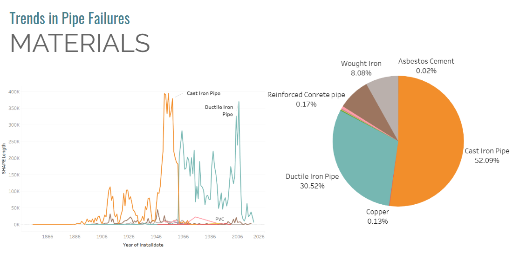
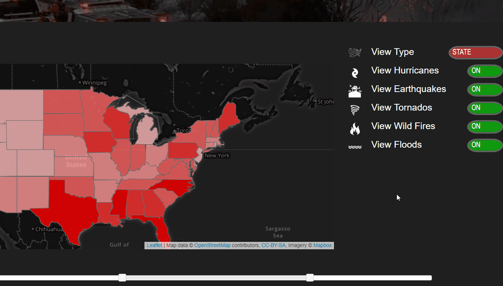
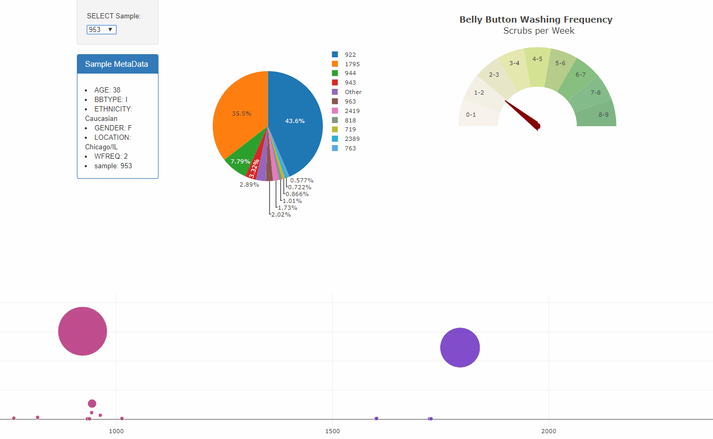
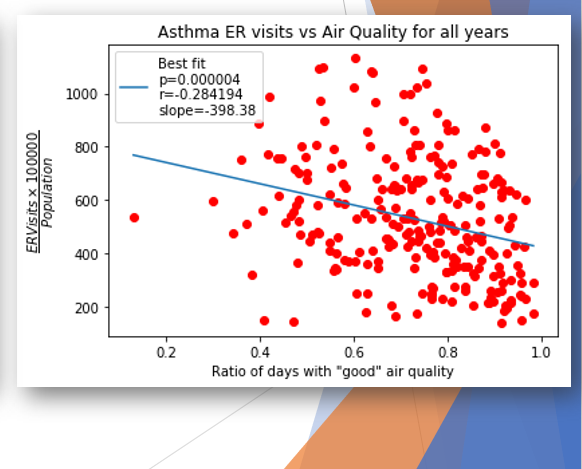
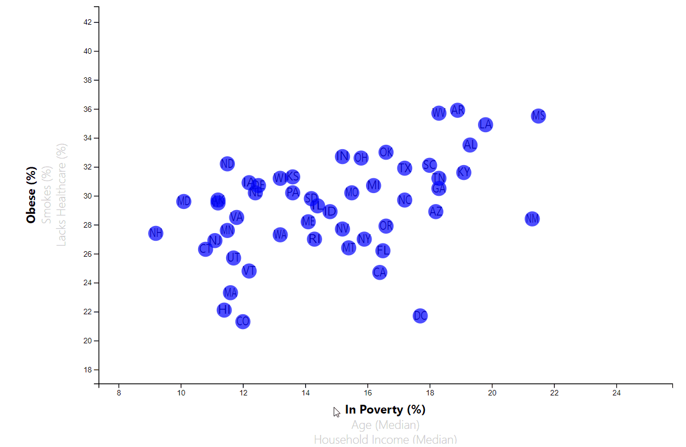

Joseph Moravitz: Portfolio
Aspiring data scientist with experience in customer service and leadership as well as the ability to grasp abstract concepts. Enjoys puzzles and coming up with ways to improve them. Gained a master’s degree in pure mathematics as well as completed the Data Science and Analytics Boot Camp course offered at Georgia Institute of Technology gaining knowledge and skills in such tools as Python, Javascript, and SQL databases.
View some examples of my work below.
Predicting Pipe Breaks in the City of Atlanta
Used machine learning in an attempt to identify key factors which lead to broken water mains in an attempt to identify those pipes which our model predicts are at risk of bursting. Used Pandas, SciKitLearn, and TensorFlow for training the models. Used Tableau to create additional visuals.
Link to the code.Link to the slideshow.
Natural Disasters in the USA: Interactive Dashboard
Used JavaScript, Leaflet, and D3.js to create interactive visuals to explore data from FEMA about major disasters occurring throughout the United States. Stored data in a SQL database and used Flask to serve the data.
Link to the code.Link to the live project.
What's the Weather Like
.png)
Gathered and analyzed data from API calls in an attempt to prove the claim that it really does get warmer the closer to the equator you get. Utilized python, jupyter notebooks, and matplotlib.
Link to the code.Link to the analysis.
Bellybutton Biodiversity Dashboard
Used JavaScript, Plotly, and Flask to create visuals to explore data about micro-organisms found in volunteers.
Link to the code.Link to the live project.
Air Quality and Asthma
Used Pandas, Matplotplib, and SciPy to analyze data gathered from the EPA, CDC, and GA OASIS to try to identify trends between air quality and occurrence rate of ER visits tied to asthmatic attacks.
Link to the code.Link to the Powerpoint Presentation.
D3.js Demo
Simple visualization showcasing the use of D3.js and svg elements to create interactive visualizations.
Link to the code.Link to live project.